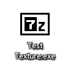
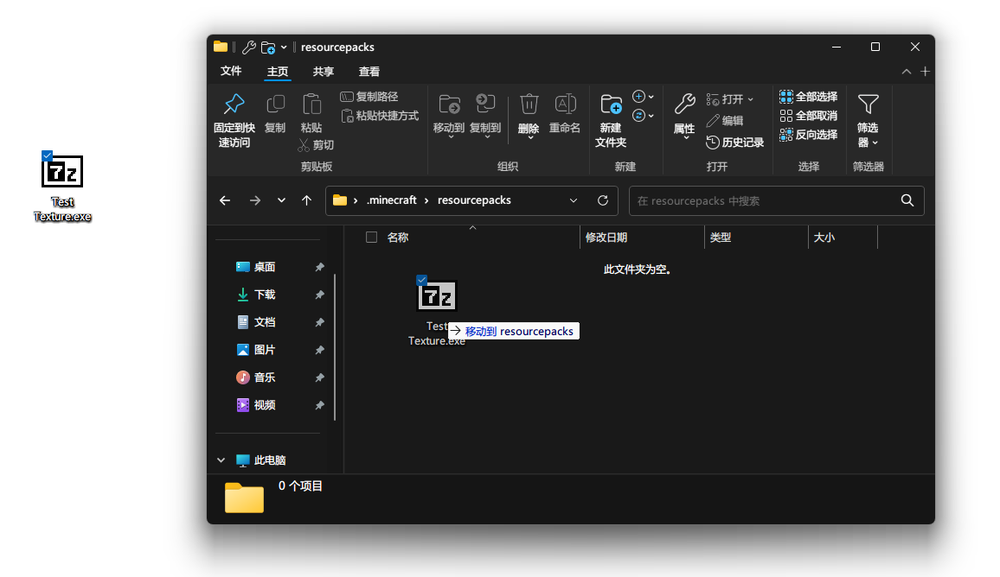
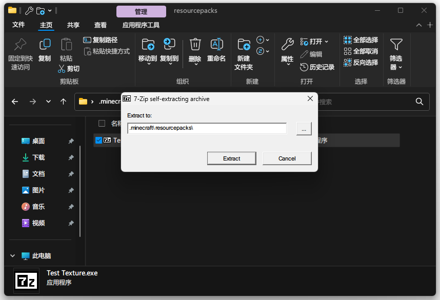
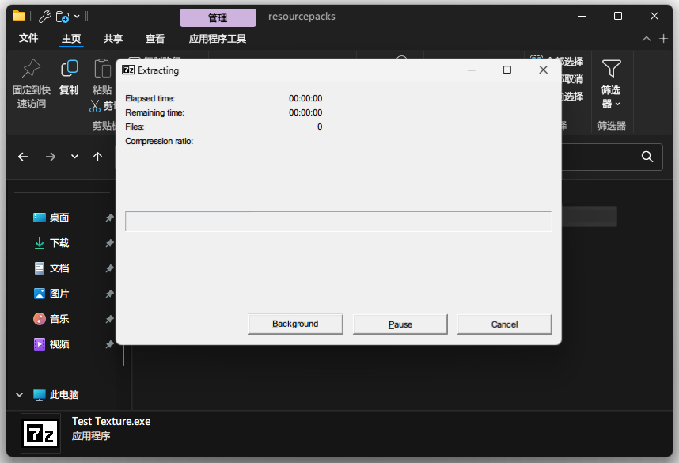
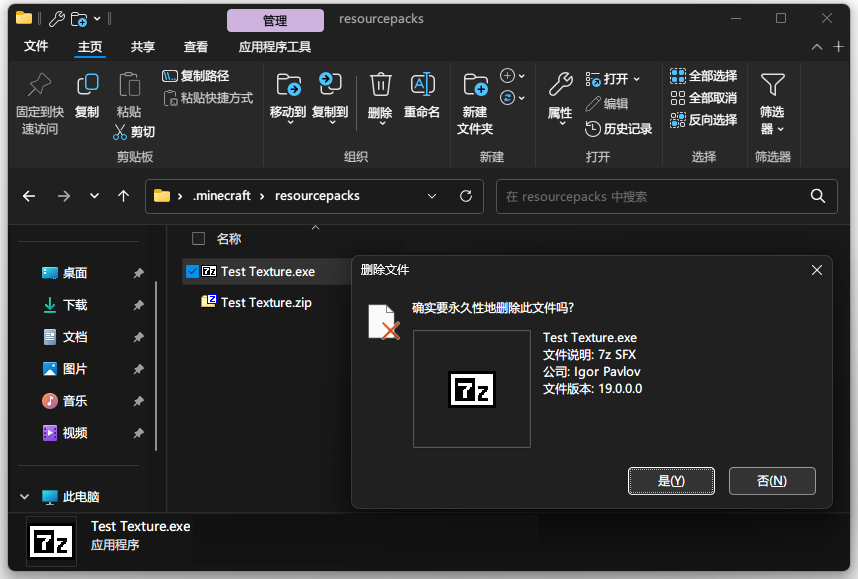
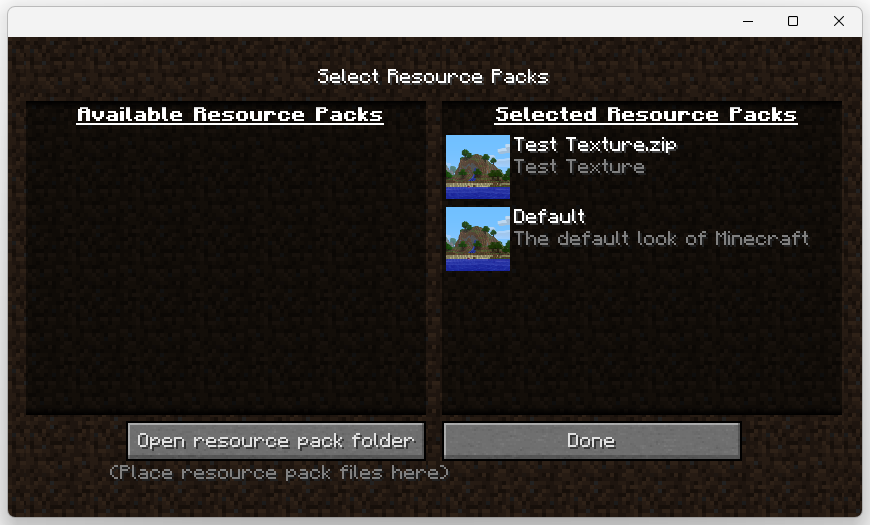
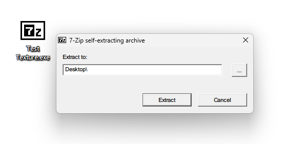
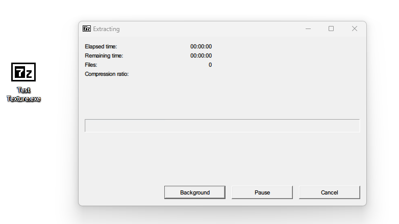

教程 #1 : 阿里云盘下载完成后无法使用材质包的做法 ( 仅供 Windows 使用 ) 。
关于 java 版 ：
1 - 在阿里云盘下载完毕后 , 材质包文件的样子是像 [ 附图-1 ] 一样的。

( 附图-1 ： 下载后材质包文件在桌面上的样子 )
2 - 将下载完毕的材质包文件移动至 Minecraft 的 材质包 ( resourcepacks ) 文件夹中 。

( 附图-2 ： 将下载完毕的材质包文件移动至 Minecraft 的材质包文件夹中 )
3 - 双击打开下载后的文件 。

( 附图-3 ： 打开下载的文件后的界面 )
4 - 点击 " Extract " , 并等待材质包被释放 。

( 附图-4 ： 正在释放材质包的界面 )
5 - 材质包被释放后 , 便可以删除下载的材质包文件 。

( 附图-5 ： 删除下载的材质包文件 )
6 - 打开 Minecraft , 并载入材质包 。

( 附图-6 ： 载入材质包 )
关于 基岩 版 ( 如果是移动端请移步至蓝奏云下载 ) :
1 - 在阿里云盘下载完毕后 , 材质包文件的样子是像 [ 附图-1 ] 一样的。
( 附图-1 ： 下载后材质包文件在桌面上的样子 )
2 - 双击打开下载后的文件 。

( 附图-2 ： 打开下载的文件后的界面 )
3 - 点击 " Extract " , 并等待材质包被释放 。

( 附图-3 ： 正在释放材质包的界面 )
4 - 双击打开释放出的材质包 , Minecraft 基岩版会自动打开并导入材质包 。
该教程 ( 教程 #1 ) 已结束 , 感谢观看 。